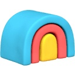
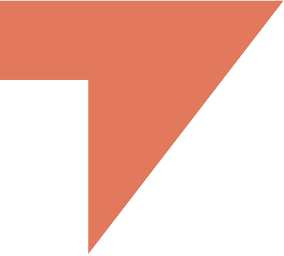
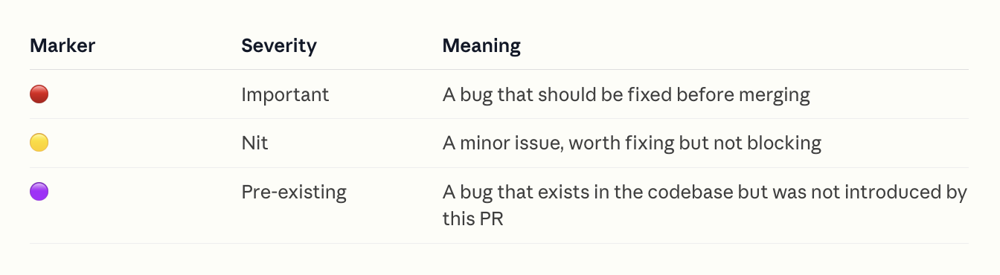
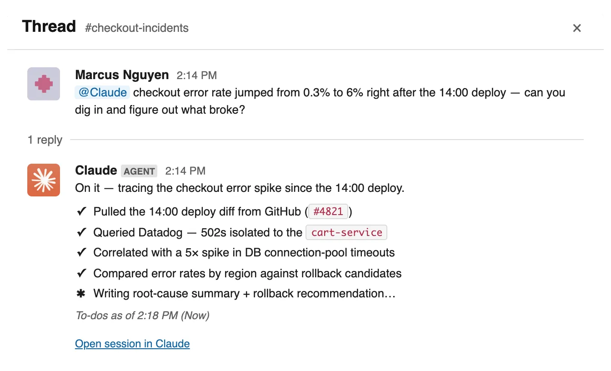
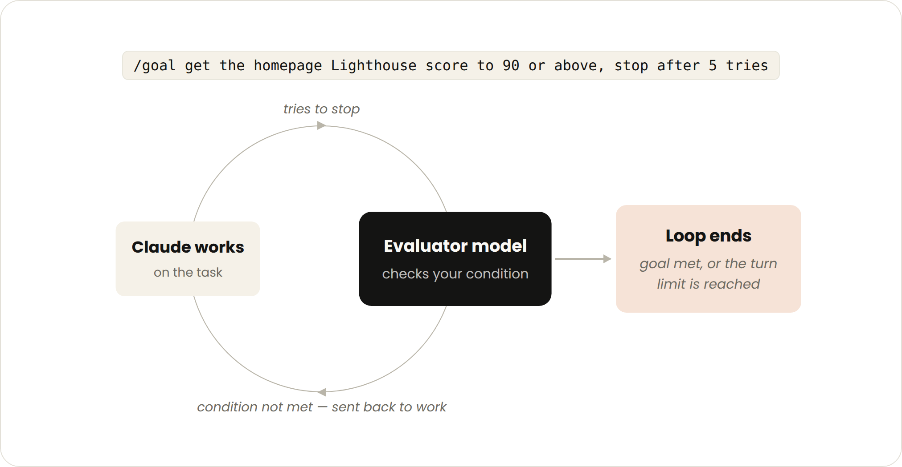

빠르게 성장하는 스타트업 십수 곳이 에이전틱 코딩으로 제품을 만들고 회사를 굴리는 방식을 인터뷰해 정리한 가이드. 이들이 지키는 다섯 가지 규칙과 창업자들의 현장 인사이트, 그리고 바로 적용할 체크리스트.
PDF로 보고 싶다면 — 같은 다섯 가지 규칙, 창업자 인사이트, 체크리스트를 오프라인에서 읽거나 팀에 공유할 수 있게 정리한 PDF가 제공된다. PDF 내려받기 ↓
일의 미래를 미리 엿보고 싶다면, 스타트업이 오늘 어떻게 일하고 있는지 물어보면 된다. Anthropic이 실제로 그렇게 했다.
빠르게 성장 중인 스타트업 십수 곳 이상을 인터뷰해, 이들이 에이전틱 코딩 도구로 제품을 만들고 회사를 확장하는 방식을 들었다. 이 스타트업들은 누가 만들 수 있는가, 무엇을 버릴 것인가, 그리고 "어떻게 만드는가"와 "무엇을 만드는가" 사이에 어떻게 플라이휠을 만드는가에 대한 규칙 자체를 바꾸고 있었다.
그리고 이들은 자기보다 열 배 큰 조직처럼 출시하고 있다.
이 가이드는 각 조직의 독특한 도입 사례를 파고들어, 빠르게 출시하면서도 경쟁 우위를 유지하기 위해 이들이 따르는 규칙을 뽑아낸다. 그 과정에서 이런 질문의 답도 어렴풋이 보이기 시작한다 — 어떤 조직이 제품 개발 라이프사이클을 처음부터 Claude Code로 설계한다면 어떤 모습일까?
에이전틱 코딩은 진입 장벽을 낮춘다. 그래서 문제를 이해하고 있는 사람이 그 문제를 고치는 첫 버전을 직접 출시할 수 있다.
에이전틱 코딩은 비기술직 구성원이 제품을 만드는 진입 장벽을 낮춘다. Claude Code를 쓰면 특정 프로그래밍 언어에 능숙하지 않아도, IDE 사용법을 몰라도 동작하는 기능을 만들 수 있다.
"엔지니어들이 훨씬 더 많이 출시하게 된 것은 물론이고, (나 같은) 비기술직 인력까지 갑자기 UI 변경과 제품 개선을 출시하고 있었다."
Mads Lunau Liechti · 공동창업자, Parahelp
스타트업 창업자에게 이건 명백한 이점이다. 우선 이들은 덩치 큰 경쟁사만큼의 인력이 없으니 "전원 투입(all hands on deck)"이 기본이다. 하지만 창업자들이 노리는 건 단순한 처리 용량만이 아니다 — 이 비기술직 구성원들은 도메인 전문성을 함께 가져온다.

"Claude Code는 Crosby에서 변호사로 일한다는 것의 의미를 바꿨다. 변호사들이 제품에 대한 최고의 인사이트를 갖고 있다. 그들이 곧 사용자이기 때문이다."
Ryan Daniels · 공동창업자 겸 CEO, Crosby
Heidi의 공동창업자 겸 CEO인 Dr. Thomas Kelly에게서도 같은 얘기를 들었다.

"우리에게 Claude Code는 전화 놀이(broken telephone) 문제를 해결해 줬다. 예전에는 아이디어를 가진 사람이 PM에게 말하고, PM이 디자이너에게, 디자이너가 엔지니어에게 전달하는 사이에 아이디어의 본질이 사라졌다. 출시될 때쯤이면 처음 생각과 닮지도 않았고, 몇 주가 걸렸다. Claude Code는 그 사슬을 접어 버린다. 문제를 실제로 이해하는 사람이 직접 PR을 낼 수 있고, 전문성이 필요한 부분에만 디자이너와 엔지니어를 부르면 된다."
Dr. Thomas Kelly · 공동창업자 겸 CEO, Heidi
"모두가 출시한다"는 말은 링크드인 포스트로는 근사하다. 그런데 현실에서는 어떻게 굴러갈까? 마케팅 팀이 풀 리퀘스트를 승인한다는 뜻인가? 법무 팀이 플래키 테스트를 bisect 하는 세부 작업을 붙들고 있다는 뜻인가?
돌아온 답은 이렇다 — 분업은 여전히 존재한다. 마케터는 여전히 마케팅에, 개발자는 여전히 개발에 집중한다. 다만 아이디어를 동작하는 프로토타입으로 만드는 가장 중요한 첫 단계, 즉 0에서 1로 가는 구간이 모두에게 열려 있다.
또한 가장 효과적인 스타트업들은 이런 기여가 우연이나 개인의 의욕에 맡겨지지 않도록, 체계적인 장치를 만들어 두고 있었다.
직원들에게 AI를 쓰라고 기대치를 세우는 것과, 실제로 Claude Code와 필요한 도구에 접근할 수 있게 해 주는 것은 별개의 문제다.

"우리는 [비기술직 직원의 기여로부터] 도망치는 게 아니라 오히려 그쪽으로 가고 있다. 우리 관점은 모든 직무가 엔지니어링 직무가 되고 있다는 것이다. 그 직무를 위한 소프트웨어를 직접 만들 수 있으니까. 그래서 우리는 뭔가 만지작거리길 좋아하고, 만드는 데 관심 있는 사람을 채용한다."
Kareem Amin · 공동창업자 겸 CEO, Clay
Crosby에서는 변호사를 Claude Code로 데려간 게 아니라, Claude Code를 변호사에게로 가져갔다. 변호사들이 매일 익숙하게 쓰는 도구와 운영 체계에 Claude Code를 연결하는 방식이었다.
gh, kubectl, bq, psql 등) CLI로 연결하는 편이 토큰 효율이 더 좋을 수 있다.

어느 시점이 되면 아이디어는 우선순위에 오를 기회를 얻어야 한다. 그래야 조직의 자원이 그것을 시장에 내보내는 데 투입된다. 프로덕트 매니저에게는 그 경로가 분명하다 — 그게 그들의 일이니까. 하지만 비기술직 직원에게는 그만큼 분명하지 않다.
Clay는 분기별 리뷰를 열어 프로토타입을 검토하고, 여기서 공식 로드맵에 진입할 수 있게 한다. Clay의 고투마켓(GTM) 팀원이 만든 자율 에이전트도 이렇게 나왔다. 이 에이전트는 웹사이트를 방문해 리드 캡처 폼을 작성하고, 응답까지 걸리는 시간을 재고, 그 경험을 평가한 뒤 성능 리포트를 생성한다.
Omni는 Claude로 만든 프로토타입 전용 Slack 채널을 두고 있고, 시니어 기술 인력을 포함한 모두가 여기에 기여한다. 이들은 "모두가 출시한다"의 짝이 되는 원칙도 함께 실천한다 — "모두가 고객과 대화한다."

엔지니어들이 고객 통화에 자연스럽게 끌리는 건 아니지만, Omni는 의도적으로 그들을 고객 앞에 세운다. 그래야 피드백 루프가 더 빨리 닫히기 때문이다.
Chris Merrick · 공동창업자 겸 CTO, Omni
"모두가 출시한다"와 "누더기(piecemeal)" 사이의 선은 얇을 수 있다. 누가 만들었든 기능 프로토타입은 결국 하나의 응집된 제품으로 통합되어야 한다. 여기서 스킬(skills)이 도움이 된다. 스킬은 팀의 표준과 맥락을 담아 둔 재사용 가능한 지시 파일로, 개발 과정이 점점 민주화되더라도 방향이 어긋나지 않게 잡아 준다.
Heidi의 Dr. Thomas Kelly는 이렇게 말했다. "팀의 누구든 우리 디자인 시스템을 참조해 Claude Code로 제품 컴포넌트, 마케팅 자료, 덱 자료를 초안 잡을 수 있다. 제품에 닿는 AI는 훨씬 높은 기준을 통과해야 하는데, Claude Code가 그 기준을 더 정밀하게 맞추도록 도와준다."
스킬은 신규 개발자와 비기술직 직원을 빠르게 온보딩시키는 데도 쓰인다.

"…우리는 Claude Code 스킬을 모아 둔 GitHub 저장소도 운영한다. 이게 공유 지식 베이스 역할을 해서, 데이터베이스(및 데이터 웨어하우스) 위치, 일부 스키마 정보, 전사적 맥락 같은 Emergent 고유 정보로 Claude Code 세션을 빠르게 부트스트랩한다. …여기서 완벽을 추구하기보다는, 에이전트가 빠르게 검증하고 스스로 궤도를 수정할 수 있는 한 컨텍스트 파일이 조금 낡아 있어도 괜찮다고 본다."
Mukund Jha · 공동창업자 겸 CEO, Emergent
"우리 엔지니어들은 Claude Code로 사내 전용 에이전트 마켓플레이스를 띄운다. 역할별로 정리되어 있어서 엔지니어링·딜리버리·세일즈가 각자 실제로 일하는 방식에 맞춰 만들어진 도구를 갖게 된다."
Jack O'Hara · 창업자 겸 CEO, Translucent
CLAUDE.md 파일을 둬서, 그 디렉터리에 매번 적용되는 코딩 컨벤션을 담아라.
반면 필요할 때만 꺼내 쓰는 절차적 워크플로는 스킬로 만들어라.
더 자세한 내용은 Claude Code 조종하기: CLAUDE.md, 스킬, 훅, 서브에이전트를 언제 쓸 것인가를 읽어 보라.
에이전트가 라이프사이클의 기계적인 80%를 맡는다. 그래야 엔지니어가 진짜로 판단이 필요한 케이스에 시간을 쓴다.
산업혁명 이래 모든 회사가 기술로 효율을 얻으려 해 왔다. 하지만 이 스타트업들은 도입의 속도와 깊이에서 차별화됐다.
이 창업자들은 AI를 자기 미션의 필수 구성요소로 본다. 상당수는 에이전트가 기계적인 80%를 맡고, 엔지니어는 진짜 판단이 필요한 케이스에 시간을 쓴다고 명시적으로 말한다.

"모두가 AI 제품을 만들려고 경주 중이다. 그런데 회사가 실제로 굴러가는 방식 자체를 다시 만드는 곳은 훨씬 적다. 두 번째가 더 큰 잠금 해제다. Artemis Security는 AI를 쓰는 회사가 아니라 AI 네이티브 회사로 운영된다. 이게 우리 속도를 폭발적으로 끌어올리고, 고객이 머신 스피드로 공격을 막게 해 준다."
Shachar Hirshberg · 공동창업자 겸 CEO, Artemis Security
구체적으로는 두 가지가 눈에 띄었다. 첫째, SDLC 전 단계에 AI가 더 촘촘히 통합되어 있었다. 둘째, 반복 작업을 처음부터 끝까지 맡도록 목적에 맞게 만들어진 에이전트가 더 많았다. 각각의 예를 보자.
여기 소개된 스타트업 상당수는 팀이 에이전틱 코딩 프로세스에 빠르게 올라타도록 하는 수단을 구현해 뒀다. 예를 들어 Emergent의 Mukund는 이렇게 말했다. "입사 첫날, 신규 입사자는 Claude를 올바른 마크다운 파일로 가리키기만 하면 개발 환경 전체가 부트스트랩된다. 온보딩 중에 Claude가 깨졌거나 낡은 것을 발견하면 그 파일을 직접 업데이트한다."
@Claude로 코멘트를 달아 루프를 닫아도 된다.

이 엔지니어들이 빠르게 온보딩되어야 하는 이유는, 팀이 그만큼 빠르게 출시하기 때문이다.
"여기 엔지니어들은 에이전트 함대(agent fleets)를 지휘하고, 프로덕션 데이터 문제를 발견한 당일에 수정을 출시하며, 여러 PR을 동시에 띄워 놓고 굴린다. 한 엔지니어는 약 13개 티켓짜리 이니셔티브를 Claude 서브에이전트를 병렬로 돌려 진행했다. 각 서브에이전트가 티켓 하나와 그에 딸린 PR을 맡는 식이었다."
Tanay Tandon · CEO 겸 창업자, Commure
이 조직들에서 Claude Code는 코드를 생성하는 데 그치지 않고 리뷰도 한다. Heidi의 Dr. Kelly는 이렇게 말했다. "우리는 검증된 기술·컴플라이언스 프레임워크에 대조해 자동 코드 리뷰를 돌린다. 심각한 이슈를 표시하고, 무엇이든 출시되기 전에 제안된 변경을 적절한 리뷰어에게 라우팅한다."
일부 조직은 코드 리뷰·테스트·CI를 위한 커스텀 에이전트도 직접 만들었다. 이 스타트업들은 단순히 코드를 배포하는 것보다 루프를 만드는 것에 상당한 주의를 기울였다.
Translucent의 창업자 Jack은 이렇게 말했다. "내가 제일 좋아하는 [에이전트]는 'Translucent 코드 리뷰어'다. 변경 사항 전체로 부챗살처럼 퍼져(fan out) 여러 각도에서 리뷰한 뒤, 우리 시니어 엔지니어가 할 법한 방식으로 결과를 종합한다. 다만 어떤 개인보다도 빠르게."
Clay는 Kareem의 말대로 "…버그 트리아지를 처리하는 에이전트를 만들었다. 1차 분류부터 수정을 위한 코드 변경 제안까지 담당한다."


이 경향이 가장 두드러진 곳은 ClickHouse였다. 공동창업자 겸 CTO인 Alexey Milovidov에 따르면, 이 데이터베이스 회사는 SDLC의 거의 모든 단계를 자율 루프로 전환했다. 플래키 테스트를 고치는 에이전트와 누락된 테스트 커버리지를 찾는 에이전트, 이 목적형 에이전트 둘이 현재 ClickHouse 저장소의 2위·3위 기여자다. 별개의 에이전트 계열이 운영(operations)을 담당하며, 팀은 그 에이전트들 자체를 만들고 개선하는 데도 Claude Code를 쓴다.
Alexey Milovidov · 공동창업자 겸 CTO, ClickHouse
또 하나 일관된 패턴은, 이 스타트업들이 개발 속도를 높이는 데 Claude Code의 에이전틱 루프를 쓰는 데 그치지 않고, 반복적이고 종종 지루한 프로세스를 가속하기 위한 에이전트도 만들고 있었다는 점이다.
대체로 정형화된 업무를 넘겨서, 경쟁 우위·고객 관계·매출 성장에 더 많은 주의를 쏟기 위한 것이었다. Claude로 가속된 프로세스 중 가장 흔했던 것은 셀프서비스 데이터 분석이었다.
거의 모든 회사가 신선한 데이터(비정형 데이터 포함)로 빠르게 의사결정을 내리는 프로세스를 갖추고 있었다. 스타트업의 삶에서 그토록 중요한 피벗을 뒷받침하는 장치다.
예를 들어 Clay는 사내 분석 에이전트를 만들었고, Heidi는 Claude Code로 고객·임상의 피드백을 사용 데이터와 함께 분류해 제품 인사이트로 이어지는 신호를 끌어올린다.
ClickHouse와 Omni는 이런 유형의 AI 데이터 분석을 제품 안에 패키징해서 출시하고 있으며, 모두 Claude로 구동된다.
다른 예로는 서브에이전트로 수천 건의 법률 문서를 요약하는 것(Crosby), 여러 사이트에 걸쳐 청구 데이터를 훑어 이상치를 표시하는 것(Commure), 어떤 분석가 팀도 제때 잡아낼 수 없는 경고 신호를 찾아 병원 재무 데이터를 지속적으로 채굴하는 것(Translucent)이 있다.

결과를 모니터링하고 검증할 신뢰할 만한 수단이 없으면 어떤 프로세스도 자동화할 수 없다.
이 규칙은 규칙 2(지루한 일을 자동화한다)에 반드시 따라붙는 짝이다. 결과를 모니터링하고 검증할 신뢰할 만한 수단이 없으면, 프로세스를 자동화할 수 없다.
Artemis Security의 공동창업자 Dan Shiebler는 배포 속도가 빨라진 것이 오직 다음 덕분에 가능했다고 말한다 — "우리가 테스트 인프라, 코드베이스 조직화, 팀 지식 시스템에 깊이 투자했기 때문이다. 그래야 에이전트가 처음부터 끝까지 출시할 수 있다. 이게 우리가 Claude와 함께 만든 플라이휠이다. 코드베이스·지식 베이스·팀을 올바른 방식으로 구조화하면, 모든 기여가 복리로 쌓인다."
Dan Shiebler · 공동창업자, Artemis Security

"초기에 우리는 Claude에게 완전한 자율성을 줬고, AI가 흔히 하는 일을 했다. 그럴듯한 코드를 빠르게 출시했다. 문제는 그게 우리 아키텍처에서 맞아 보이지만 실은 아닌 방식으로 표류했다는 것이다. 그래서 우리는… 모든 불변식(invariant)을 적어 내려갔다. 우리가 문제를 어떻게 프레이밍하는지. 무슨 일이 있어도 참이어야 하는 것이 무엇인지. 자신만만한 답을 믿는 대신 어떻게 증명할 것인지. 이 팀이 사고하는 방식 567줄이다."
Victor Hunt · 공동창업자 겸 CEO, Zingage
CLAUDE.md에 넣어라.
Claude는 모든 세션의 시작 시점에 이 파일을 읽는다. 그래서 아키텍처 규칙, 보안 경계, 협상 불가 항목이 모든 세션에 함께 따라간다.
분명히 해 두자면, 이 스타트업들 중 어느 곳도 에이전트가 main에 머지하도록 두고 잘 되기를 바라는 식으로 일하지 않는다. 상당수는 고도로 규제된 산업에서 일하며 강력한 거버넌스 프레임워크를 요구받는다. Cainex는 에이전트와 결정론적 검사를 결합한 특히 좋은 사례다. 의료 기록을 읽어 병원 청구를 결정하는 코드를 생성하는 일이다.

"의료 코딩에서 잘못된 코드는 오타가 아니다. 청구·컴플라이언스 사건이다. 그 사실 하나가 우리가 만드는 방식 전체를 지배한다."
Uriah Israel · 공동창업자 겸 CTO, Cainex
Uriah가 설명한 루프는 이렇다. "Claude Code가 우리를 위해 돌리는 루프는 이렇다. 에이전트로 배치를 처리하고, 우리 감사자(auditor)들이 사내 앱에서 그 출력을 리뷰한다. 그들은 코드만 보는 게 아니라 모델의 추론까지 본다. 그리고 둘 다에 코멘트를 단다. …모든 것이 버전 관리되고 감사 가능하다."
"그다음 Claude Code가 이어받는다. 원래 예측과 모든 수정·코멘트를 데이터베이스에서 직접 읽는다. 각 수정에는 관련된 코드 종류가 태깅되어 있어서, Claude Code는 자기가 보고 있는 것이 진단 이슈인지, 시술 이슈인지, 다른 범주인지 알고, 그 특정 코딩을 규율하는 지침으로 곧장 갈 수 있다."
"거기서부터 에이전트 지시문 중 그 실수를 만들어 낸 부분을 찾아 수정하거나, 정말 새로운 케이스라면 새 지침을 작성한다. 모든 변경은 버전 관리된 지시문 세트에 대해 이뤄지고, 실패했던 기록들에 대해 테스트된다. 우리가 강제하는 규칙은 이거다 — 사례가 아니라 원칙을 고쳐라(fix the principle, not the example)."
"그다음은 백테스트다. 한 기록에 허용 가능한 코딩이 여러 개일 수 있으니 단순 문자열 매칭이 아니다. 검사는 우리가 인정한 세트에 대한 의미론적 매칭과, '이게 진짜 오류인가 아니면 그냥 다른 유효한 경로인가'를 묻는 심판(judge)을 결합한다. 여기에 Claude Code가 자체 비교를 얹는다."
"후보 변경을 골든 세트와 무작위 샘플에 걸쳐 돌려 보고, 무엇이든 출시되기 전에 회귀를 드러낸다. 돌아오는 것은 짧은 목록이다 — 제안된 편집, 해결하지 못한 기록들, 답을 원하는 질문들. 엔지니어는 기계적인 80%가 아니라 진짜 어려운 케이스에 시간을 쓴다."
이 헬스케어 청구 특화 워크플로에서 창업자들이 일반화해 가져갈 수 있는 교훈이 여럿 있다.
예를 들어 Cainex는 주제 전문가(SME)가 Claude의 추론을 정기적으로 리뷰하고 안내하도록 한다. 다만 이 전문가들은 사례 하나하나를 고치기 위해 있는 게 아니다. 그들의 지침은 자기개선 루프의 일부로 쓰인다. Uriah의 표현대로 "사례가 아니라 원칙을 고쳐라."

다른 교훈은 강력한 평가용 "골든 세트"를 유지하는 데 쏟는 성실함이다. 골든 세트란 팀이 에이전트의 정확도를 검증하는 데 쓰는, 검증된 질문-답변 쌍의 묶음이다. 모든 스타트업은 핵심 유스케이스에 대해 여러 벌의 평가 세트를 유지하고 정기적으로 업데이트해야 한다. 그래야 드리프트를 방지하고 앞으로 나올 모델을 평가할 수 있다.
"[Claude Code는] 우리가 모델 속도(model velocity)를 관리하는 방식도 완전히 바꿨다. 새 비디오·이미지 모델이 끊임없이 나온다. 각각은 배포 전에 새로운 스킬, 평가, 라우팅 로직, 프로덕션 테스트를 필요로 한다. Claude Code는 그 사이클을 며칠에서 몇 시간으로 압축했고, 프로덕션에서 이슈를 발견해 같은 세션 안에서 수정을 배포할 수 있게 해 줬다. …인력이 10배인 회사들과 경쟁할 때, 그 정도의 레버리지는 모든 것을 바꾼다."
Alex Mashrabov · 공동창업자 겸 CEO, Higgsfield
Uriah가 마지막으로 짚은 점은, 이 프로세스가 품이 좀 든다는 것이다. "처음부터 이렇게 깔끔했던 건 아니다. 우리 첫 버전은 과적합(overfit)했다. 특정 케이스를 인코딩하는 방식으로 뭔가를 '고쳐' 버렸고, 우리는 더 똑똑해지는 대신 패치를 쌓아 가고 있었다. 그래서 일반 원칙을 강제하고, 하나의 변경에 들어갈 수 있는 구체 사례의 수 자체에 상한을 두는 쪽으로 접근을 바꿨다."
/goal은 Claude가 작업을 성급히 끝났다고 선언하거나, 리뷰할 때 자기 발견을 편애하거나, 원래 목표에서 표류할 수 있는 길고 복잡한 작업에 유용하다.
모델 역량이 팀 발밑에서 계속 움직인다. 그래서 영구적인 것으로 취급되는 것이 거의 없다.
이 AI 네이티브 스타트업 상당수는 끊임없는 재발명 상태에 있다.
AI는 이들이 무엇을 만드는가의 중심이자 어떻게 만드는가의 중심에 있다. 모델 역량이 계속 진화하기 때문에, 획기적이었던 기능과 결정적이었던 스캐폴딩도 매몰 비용이 되는 순간 버려졌다. 많은 조직이 이 끊임없는 재구축을 경쟁 우위의 일부로 봤다.
Kareem은 이렇게 말했다. "Clay에서 우리가 하는 건 이렇다. 만들고, 다시 만들고, 또다시 만든다. 그리고 네 번째로 만들 때가 되면 필요한 걸 전부 알게 되고 제대로 만들게 된다. 그래서 우리는 뭔가를 꼭 버리는 게 아니다. 그냥 다시 만드는 것이다. 이번에는 더 또렷하게."
Commure의 공동창업자 Tanay는 이렇게 말했다. "재구축은 새 경로가 출시됐을 때 끝나는 게 아니다. 옛 경로가 사라졌을 때 끝난다. 예전에는 철거(teardown)가 항상 우선순위 싸움에서 졌다. 지루한 데다 기능이 하나도 안 나오니까." 그리고 이렇게 덧붙였다. "이제 Commure의 엔지니어 한 명이 Claude 스킬을 호출한다. '이미 전원에게 릴리스된 모든 기능 플래그에 대해, 그 플래그와 관련 코드를 제거하는 PR을 열어라' 같은 식으로. 그다음 엔지니어가 돌아온 결과를 리뷰한다. 예전에는 개발 사이클을 많이 잡아먹던 마이그레이션이 이제 계획 하나와 팬아웃으로 몇 시간 만에 끝난다."

연결된 각 worktree는 자기 브랜치가 체크아웃된 평범한 디렉터리다. 세 개 모두 acme-web 안에 있는 단 하나의 .git 오브젝트 스토어를 공유한다.
Kareem은 Clay의 해자(moat) 일부를 끊임없이 재구축하고, 진화하고, 자기개선 루프를 만들어 내는 능력이라고 설명했다.
"지금 어떤 회사든 해자는 자기개선적이어야 한다는 데 있다고 생각한다. 그래서 Clay는 자기학습형 레비뉴 엔진이다. 쓰면 쓸수록 우리는 당신의 최고 고객이 누구인지, 무슨 말을 해야 하는지, 무엇이 통했고 무엇이 안 통했는지 더 잘 알게 된다. 그리고 그건 시간에 따라 변한다." 그는 덧붙였다. "경주는 결국 누가 가장 빠르게 유통(distribution)에 도달하느냐다. …그래야 각 [고객]을 도울 수 있고, 그래야 자기개선할 수 있다."
2026년 5월 Code with Claude 행사에서, Harvey의 Head of Applied AI인 Niko Grupen은 새로운 모델 역량의 물결 — 창발적 추론, 에이전틱 자동화, 계획과 오케스트레이션 — 이 올 때마다 플랫폼 전체의 재아키텍처가 필요했다고 이야기했다.
"6개월 전에 우리 아키텍처가 어떻게 생겼냐고 물었다면, 지금과는 근본적으로 다른 답을 드렸을 것이다. 만약 우리가 '이건 갈아엎고 에이전트 네이티브로 가야 한다'고 말할 의지가 없었다면, 지금 우리 플랫폼에 있는 이 역량들은 아예 존재할 수 없었을 것이다."
Niko Grupen · Head of Applied AI, Harvey
같은 행사에서 Cognition의 공동창업자 Walden Yan은 이렇게 말했다.
"지금 AI를 만드는 삶의 방식은, 오늘 만든 것이 6개월에서 1년 안에 폐기될 가능성이 매우 높다는 사실을 받아들이는 것이다. …[Devin]은 2년 전 우리가 갖고 있던 모델 세트로는 전혀 불가능했다. [하지만 우리가 건 베팅은] 오늘은 안 될지 몰라도, 곧 될 것이라는 쪽이었다."
Walden Yan · 공동창업자, Cognition
--plan 또는 Shift+Tab).
Claude가 코드베이스를 탐색하고 코드를 쓰기 전에 재구축 접근법을 제안한다. 승인하거나 방향을 틀면 된다.
아키텍처에서 표류하려는 재구축을 잡아내는 가장 값싼 지점이다.
AI로 만드는 것이 이 스타트업들이 AI로 파괴적 제품을 만들도록 돕는다 — 이들 프로세스의 심장에 있는 플라이휠이다.
이 스타트업들 상당수는 개발 프로세스의 심장에 핵심 플라이휠을 두고 있다. AI로 만드는 것이 AI로 파괴적인 제품을 만드는 것을 돕는다.
개발자가 자기 에이전틱 코딩 실천을 발전시키면, 모델의 역량을 더 단단히 파악하게 되고 프런티어에서 하니스(harness) 설계가 어떻게 진화하는지에 대한 통찰을 얻는다. 그리고 그 영감을 자기 에이전트와 제품에 가져다 쓸 수 있다.
Omni의 Chris는 이렇게 말했다. "우리는 [Anthropic의] 파일 대(對) 임베딩 접근법에서 영감을 얻었고, 덕분에 우리 제품에서도 단순하게 가도 되겠다는 확신을 얻었다. RAG 파이프라인에서 왔을 많은 복잡도를 피했다." 그리고 이렇게 덧붙였다. "또한 Claude Code의 하니스가 사용자들이 병렬로 일을 처리하게 해 주는 것을 보고, 그 개념 일부를 우리 UI에 적용했다."
이 플라이휠은 자기 제품의 성능에 계속 촉을 세우는 데도 도움이 된다.
Emergent의 Mukund는 이렇게 말했다. "우리 앱 빌더도 뒤에서 Anthropic 모델을 쓰기 때문에, 제품에서 어떤 동작을 발견하면… Claude Code로 로컬에서 빠르게 디버깅해서 그게 모델 동작인지 하니스 이슈인지 판별할 수 있다. 이게 우리 트리아지 사이클 개선에 엄청나게 도움이 됐다."
반복해서 들린 패턴은 이렇다 — Claude Code로 사내 에이전트를 만들고, 사내에서 써 보고(도그푸딩), 반응에 따라 고객용 제품으로 승격시킨다. 승격 시에는 주로 Claude API, SDK, 또는 Claude Managed Agents를 쓴다.
ClickHouse의 Alexey는 이렇게 말했다. "우리는 [제품 안에] 팀이 직접 상호작용하는 자체 AI 에이전트를 만들었다. SQL 콘솔 안의 에이전트와 AI SRE가 그것이다. 그리고 이 에이전트들 자체를 만들고 개선하는 데 Claude Code를 쓴다. 우리 고객의 AI 경험을 구동하는 도구가, 부분적으로는 AI로 만들어진 것이다."
이 가이드는 넓은 범위를 다뤘다. 핵심 팁을 한 페이지에 모으면 다음과 같다.
CLAUDE.md를 둬서, 그 디렉터리에 매번 적용되는 코딩 컨벤션을 담아라. 필요할 때만 꺼내 쓰는 절차적 워크플로는 스킬로 만들어라.CLAUDE.md에 넣어라./plan 또는 Shift+Tab). Claude가 코드베이스를 탐색하고 코드를 쓰기 전에 재구축 접근법을 제안한다. 승인하거나 방향을 틀면 된다. 아키텍처에서 표류하려는 재구축을 잡아내는 가장 값싼 지점이다.여기 담긴 통찰은 프런티어에서 만들고 있는 동료들에게서 나왔다. 실용적이고 바로 적용할 만했기를 바란다. Claude 스타트업 커뮤니티는 영감과 모범 사례, 조언이 끊이지 않는 곳이다. 다음 방법으로 참여할 수 있다.
자세한 내용은 문서를 참고하라 · Claude Code 사용해 보기 · 개발자 문서 · 요금 보기 · 영업팀 문의